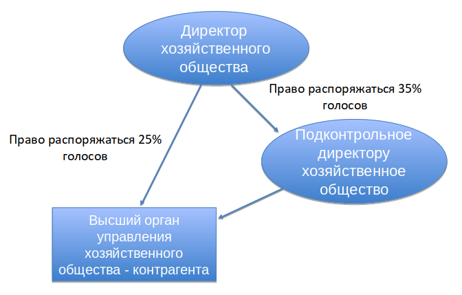

Сделки с заинтересованностью
в хозяйственных обществах:
понятие и правовая природа
Выполнила: студентка 4 курса ЧОУ ВО «Омская юридическая академия» Цыганова Анастасия Александровна
Научный руководитель: Маланина Екатерина Николаевна, старший преподаватель кафедры гражданского права ЧОУ ВО «Омская юридическая академия»
Сделка с заинтересованностью
Сделка, в совершении которой имеется заинтересованность члена совета директоров (наблюдательного совета) хозяйственного общества, единоличного исполнительного органа, члена коллегиального исполнительного органа общества или лица, являющегося контролирующим лицом общества, либо лица, имеющего право давать обществу обязательные для него указания.
Критерии заинтересованности
Лицо признается заинтересованным, если оно, его супруг (супруга), родители, дети, полнородные и неполнородные братья и сестры, усыновители и усыновленные и (или) подконтрольные им лица (организации):
- являются стороной, выгодоприобретателем, посредником или представителем в сделке;
- являются контролирующим лицом юридического лица, являющегося стороной, выгодоприобретателем, посредником или представителем в сделке;
- занимают должности в органах управления юридического лица, являющегося стороной, выгодоприобретателем, посредником или представителем в сделке, а также должности в органах управления управляющей организации такого юридического лица.
Контролирующее лицо
Лицо, имеющее право прямо или косвенно распоряжаться более 50 процентами голосов в высшем органе управления подконтрольной организации либо право назначать (избирать) единоличный исполнительный орган и (или) более 50 процентов состава коллегиального органа управления подконтрольной организации.
Заинтересованность директора
в совершении сделки отсутствует

Заинтересованность директора
в совершении сделки имеется

| Заинтересованными лицами могут быть признаны |
|---|
| члены совета директоров (наблюдательного совета) |
| единоличный исполнительный орган |
| члены коллегиального исполнительного органа общества |
| субъекты, которые осуществляют фактический контроль над юридическим лицом |
| субъекты, через которых или совместно с которыми осуществляется фактический контроль над обществом |
Фактический контроль осуществляется в силу прямого или косвенного преобладающего участия в его уставном капитале, на основании договора, в силу возможности давать обязательные для такого юридического лица указания, в силу возможности определять избрание (назначение) единоличного исполнительного органа (управляющей организации или управляющего) и (или) более половины состава коллегиального органа управления такого юридического лица и в иных ситуациях, в которых указанные субъекты осуществляют исполнительно-распорядительные либо управленческие функции.
Обстоятельства, при которых за указанными лицами может признаваться заинтересованность
Указанные лица, имеют личную заинтересованность в понимании части 2 статьи 10 Федерального закона от 25.12.2008 г. № 273-ФЗ «О противодействии коррупции» в отношении сделкок, в которых они, а также лица, указанные в статье 2 Семейного кодекса Российской Федерации, иждивенцы перечисленных субъектов и лица, которые состоят с перечисленными субъектами в фактическом браке или иных личных доверительных отношениях:
| являются стороной, выгодоприобретателем, посредником или представителем в сделке |
| занимают должности в органах управления подобного хозяйственного общества, а также в органах управления управляющей организации такого хозяйственного общества |
| являются лицом фактически руководящим деятельностью юридического лица, являющегося стороной, выгодоприобретателем, посредником или представителем в сделке |
Лица, указанные в статье 2 Семейного кодекса Российской Федерации
супруги, родители и дети (усыновители и усыновленные), а в случаях и в пределах, предусмотренных семейным законодательством, другие родственники и иные лица.
Личная заинтересованность
Возможность получения доходов
- в виде денег, иного имущества, в том числе имущественных прав
- услуг имущественного характера
- результатов выполненных работ или каких-либо выгод (преимуществ)
лицом, замещающим должность, замещение которой предусматривает обязанность принимать меры по предотвращению и урегулированию конфликта интересов, и (или) состоящими с ним в близком родстве или свойстве лицами, гражданами или организациями, с которыми лицо, замещающее должность, замещение которой предусматривает обязанность принимать меры по предотвращению и урегулированию конфликта интересов, и (или) лица, состоящие с ним в близком родстве или свойстве, связаны имущественными, корпоративными или иными близкими отношениями.
КОНФЛИКТ ИНТЕРЕСОВ
Сделка или отношения, которые представляют или могут представлять конфликт между обязанностями, выполняемыми лицом, которое может быть признано заинтересованным, и его прямой или косвенной личной заинтересованностью.
Дополнить
статью 174 Гражданского кодекса Российской Федерации пунктом 3 следующего содержания:
| «3. В случае нарушения хозяйственным обществом процедуры согласования сделок с заинтересованностью сделка может быть признана судом недействительной по иску участника (акционера) юридического лица.» |